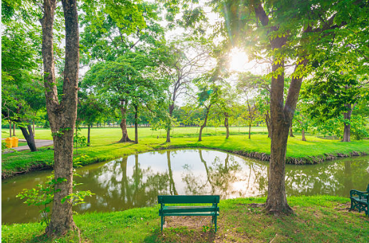

Introduction

Mental wellness is the state of maintaining a healthy and balanced mind. It influences how clearly we think, how well we cope with stress, and how effectively we handle responsibilities. It is more than the absence of illness. it is the presence of strong emotional resilience, positive habits, and supportive environments.
Mental health plays a crucial role in the United Nations Sustainable Development Goal 3: Good Health and Well-being. SDG 3 highlights mental health as a global priority because millions experience stress, anxiety, and burnout every year. For students, academic pressure, lifestyle changes, and social expectations make mental wellness especially important.
Why Mental Health Matters
Mental wellness supports nearly every aspect of daily life from decision-making and memory, to relationships and academic performance. When mental health is ignored, it can lead to long-term consequences such as chronic stress, burnout, and reduced motivation.
SDG 3 recognises that a healthy society requires both physical and mental well-being. Without investment in mental health education, services, and awareness, communities face higher risks of illness, stigma, and inequality. Strengthening mental wellness promotes stability, productivity, and a healthier future for everyone.
Mental wellness is also deeply connected to other SDGs, including quality education, reduced inequalities, and sustainable communities. Supporting mental well-being helps build fairer and more resilient societies.
How Poor Mental Health Affects Students
Students often face unique challenges such as academic workload, financial stress, and social transitions. These pressures can affect concentration, sleep, motivation, and confidence. Without support, mental strain can lead to academic difficulties and reduced well-being.
Common challenges for students include:
- Stress from deadlines, exams, and coursework
- Isolation from being away from familiar environments
- Difficulty balancing responsibilities with self-care
- Feeling overwhelmed by expectations or uncertainty
Understanding these challenges helps students recognise early signs of stress and encourages them to seek support when needed.
Actions You Can Take
You don't need special training to improve your mental wellness. Small, everyday habits can make a real difference. Here are simple actions you can start today:
1. Practise Mindfulness
Mindfulness techniques like breathing exercises, journaling, or short meditations help reduce stress and improve focus. Just a few minutes a day can improve clarity and emotional balance.
2. Build Healthy Routines
Regular sleep, structured study time, and scheduled breaks help stabilise mood and energy levels. Routines support a balanced lifestyle during busy periods.
3. Stay Physically Active
Exercise boosts concentration, reduces tension, and improves overall mood. Activities such as walking, stretching, or sports are easy ways to support mental health.
4. Talk to Someone You Trust
Sharing your thoughts with a friend, family member, or mentor helps relieve stress. Conversations provide comfort, new perspectives, and emotional support.
Further Resources
These organisations and services offer reliable support and information about mental wellness:
- Student Minds – student mental health charity: studentminds.org.uk
- Mind – mental health education and support: mind.org.uk
- Samaritans – 24/7 support (Call 116 123): samaritans.org
- SDG 3 Overview: UN SDG 3
Explore the other health topics on our website or return to the Home Page for more wellbeing resources.